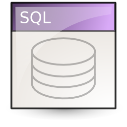
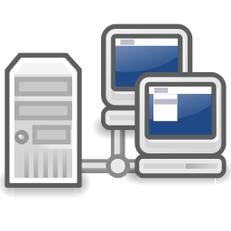
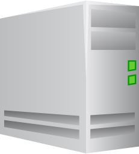

Le coursSQL (Structured Query Language), est un langage destiné à la gestion des bases de données relationnelles. Dans ces tutoriels, nous allons utiliser Oracle comme Système de Gestion de Base de Données (SGBD) dévéloppé par Oracle Corporation. Pour commencer, il faut savoir qu’Oracle comporte plusieurs types d’objets. Les plus utilisés sont les Tables, les Vues, les Triggers (ou Déclencheurs) , les Fonctions, les Procédures et les Packages. Bien sûr il existe d’autres composants dont on va parler dans un autre tutorial.
JAVA SE
Le coursJava Platform, Standard Edition, ou Java SE, est une spécification de la plate-forme Java d'Oracle, destinée typiquement aux applications pour poste de travail. La plate-forme est composée, outre les API de base :des API spécialisées dans le poste client (JFC et donc Swing, AWT et Java2D) ;
des API d'usage général comme JAXP (pour le parsing XML) ;
de JDBC (pour la gestion des bases de données).
Réseau
Le coursUn réseau informatique est un ensemble d'équipements reliés entre eux pour échanger des informations. Par analogie avec un filet (un réseau est un « petit rets », c'est-à-dire un petit filet1), on appelle nœud l'extrémité d'une connexion, qui peut être une intersection de plusieurs connexions ou équipements (un ordinateur, un routeur, un concentrateur, un commutateur).
Windows server
Le coursWindows Server est un nom de marque pour un groupe de systèmes d'exploitation serveur publié par Microsoft . Il inclut tous les systèmes d'exploitation Windows de la marque "Windows Server", mais aucun autre produit Microsoft. Windows Server 2003 a été la première édition de serveur Windows à être publiée sous cette marque . Cependant, la première édition serveur de Windows était Windows NT 3.1 Advanced Server, suivie de Windows NT 3.5 Server, Windows NT 4.0 Server et Windows 2000 Server ; ce dernier était la première édition de serveur à inclure Active Directory, Serveur DNS, serveur DHCP, stratégie de groupe, ainsi que de nombreuses autres fonctionnalités populaires utilisées aujourd'hui.
System de fichier
Le coursLe terme système de fichiers (abrégé « FS » pour File System1, parfois filesystem en anglais) désigne de façon ambiguë :
soit l'organisation hiérarchique des fichiers au sein d'un système d'exploitation (on parle par exemple du file system d'une machine unix organisé à partir de sa racine (/) )
soit l'organisation des fichiers au sein d'un volume physique ou logique, qui peut être de différents types (par exemple NTFS, FAT, FAT32, ext2fs, ext3fs, ext4fs, zfs, btrfs, etc.), et qui a également une racine mais peut en avoir plusieurs.
Linux
Le coursLinux est, au sens restreint, le noyau de système d'exploitation Linux, et au sens large, tout système d'exploitation fondé sur le noyau Linux. Cet article couvre le sens large.
À l'origine, le noyau Linux a été développé pour les ordinateurs personnels compatibles PC, et devait être accompagné des logiciels GNU pour constituer un système d'exploitation. Les partisans du projet GNU promeuvent depuis le nom combiné GNU/Linux. Depuis les années 2000, le noyau Linux est utilisé sur du matériel informatique allant des téléphones portables aux super-ordinateurs, et n'est pas toujours accompagné de logiciels GNU. C'est notamment le cas d'Android, qui équipe plus de 80 % des smartphones.
Le noyau Linux a été créé en 1991 par Linus Torvalds. C'est un logiciel libre. Les distributions Linux ont été, et restent, un important vecteur de popularisation du mouvement open source.
 Le cours
Le cours